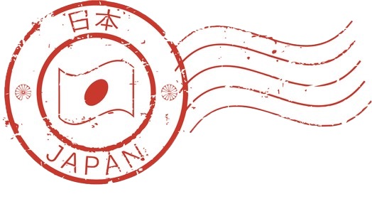

Home · 2026-10-03 · Day, Sun, Japan
ひ hi にち nichi
Usage: 日 commonly expresses “day / sun / japan” in written Japanese.
Example: 日本 (にほん, Nihon): Japan; 日曜日 (にちようび, nichiyōbi): Sunday
Stroke order
hi
ni
chi

G Fonts Japanese typesHome · 2026-10-03 · Day, Sun, Japan
ひ hi にち nichi
Usage: 日 commonly expresses “day / sun / japan” in written Japanese.
Example: 日本 (にほん, Nihon): Japan; 日曜日 (にちようび, nichiyōbi): Sunday

G Fonts Japanese types